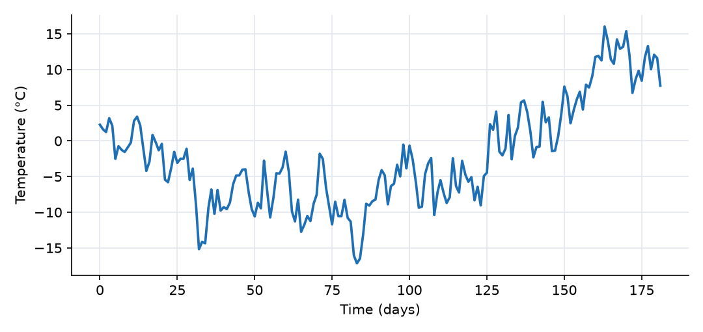
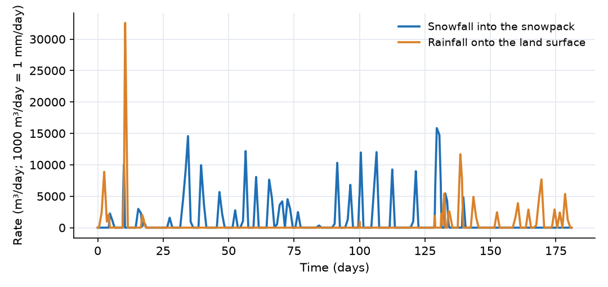
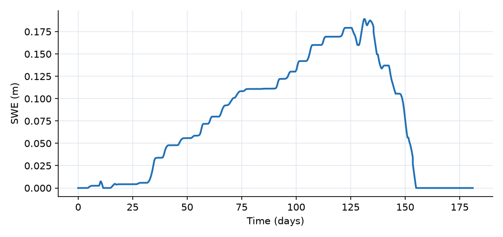
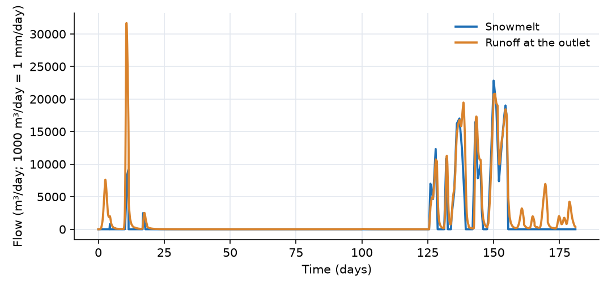
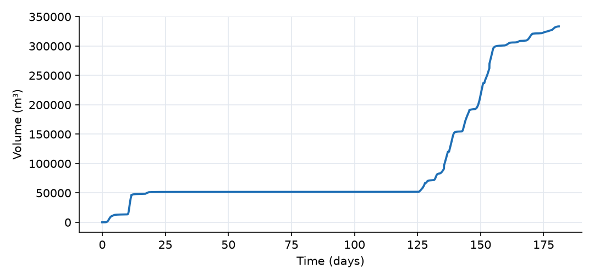

What this model represents
In cold regions much of the winter precipitation does not run off when it falls. It is stored as snow and released weeks or months later, when the air warms in spring. The timing of runoff is therefore controlled by temperature as much as by precipitation. This model follows one winter (1 November to 30 April, days 0 to 181) on a 1 km² catchment with synthetic but realistic weather for a cold continental site: monthly mean temperatures of −1, −8, −10, −5, 0 and +10 °C from November to April, and 334 mm of precipitation.
The model is a minimal temperature-index (degree-day) snow model, the approach used in most operational and conceptual watershed models (for example HBV, SWAT and SRM). It shows the three steps that every such model has: partition precipitation into rain and snow, store the snow as water equivalent, and melt it at a rate set by air temperature.
How it works
Rain and snow. Both precipitation sources read the same file. Each computes an effective temperature T = T_air + temperature_offset (offset 0 here) and splits the precipitation with a linear transition between T_s = −1 °C and T_r = +1 °C:
f_rain = min(max((T − T_s)/(T_r − T_s), 0), 1), f_snow = 1 − f_rain
A source delivers coefficient × series value × rate, where the coefficient is the area of the receiving block and the rate is f_rain or f_snow. Rainfall is assigned to the land surface and Snowfall to the snowpack, so the snowpack receives P·f_snow·A and the land surface P·f_rain·A, where P is the precipitation intensity (m/day) and A = 10⁶ m².
Snowpack. The snowpack stores snow as a water-equivalent volume V_snow, with SWE = V_snow/A. Its balance is
dV_snow/dt = P·f_snow·A − Q_melt
Melt. The Snowmelt link moves water from the snowpack to the land surface at the degree-day rate
Q_melt = A · DDF · max(T − T_m, 0)
with DDF = 0.003 m/day/°C and T_m = 0 °C. Every degree above freezing melts 3 mm of SWE per day. The link is storage limited: once the pack is empty, melt stops even if it is warm.
Land surface and outlet. The land surface is a Catchment block. It receives rain and melt and drains to the outlet with Manning's equation for sheet flow,
Q = 86400 · (W/n) · S^0.5 · max(d − d_s, 0)^(5/3) (m³/day)
where d is the water depth on the surface (Storage/area), W the width, S the slope, n the roughness and d_s the depression storage (0 here). With a runoff coefficient of 1 every drop reaching the surface becomes runoff. The outlet is a fixed-head block whose storage starts at zero, so it records the cumulative yield.
Because the area is 1 km², a flow of 1000 m³/day equals 1 mm/day of water depth over the catchment.
What to look for in the results
- Partition. Of the 334 mm of precipitation, 228 mm falls as snow and 106 mm as rain. November and late-April storms are rain; December to March storms are almost all snow.
- Accumulation. A first thin snow cover (days 5 to 10) melts during a warm rain storm on day 11. The lasting pack starts around day 18. SWE then grows in steps, one per storm, and reaches its maximum of 189 mm around day 131 (mid-March). Short thaws melt only 9 mm of snow before day 120.
- Delayed runoff. About 52 mm runs off in November, mainly from a rain storm on day 10. From early December to early March almost no water leaves the catchment, even though about 190 mm of precipitation falls between days 30 and 130.
- Spring freshet. Once temperatures stay above 0 °C, melt rates reach 23 mm/day (day 150) and the pack is gone by day 155 (early April). Between days 130 and 155 about 225 mm leaves the catchment, two thirds of the season's yield.
- Water balance. At the end of the run the snowpack is empty, 0.5 mm is still on the land surface, and the outlet has received 333.5 mm. Snowfall plus rainfall is 334.0 mm, so the balance closes.
Assumptions and limitations
- The weather is synthetic. Temperature and precipitation are uniform over the catchment.
- This is a temperature-index model. It does not represent the energy balance (radiation, wind, humidity), cold content, refreezing, liquid water held in the pack, sublimation, canopy interception or wind redistribution of snow.
- The degree-day factor and transition temperatures are typical values, not calibrated. In practice the degree-day factor varies from about 2 to 6 mm/day/°C and often increases through the melt season.
- Snow covers the whole catchment whenever SWE is above zero. There is no snow-covered-area depletion curve.
- The land surface does not infiltrate or evaporate water, so all precipitation eventually becomes runoff. To study infiltration and soil storage, connect the melt to a soil-based unit such as a hydrologic response unit; the
snowmeltplugin has pervious and impervious melt links for that purpose. temperature_offsetcan shift the temperature of a higher or lower surface (lapse-rate correction). Apply the same offset to the snowpack and both precipitation sources.
Model diagram
Hover a block or link to see its name and type. Arrows show the positive flow direction.
Components
Click a component to see every property set in the model file, with units and meaning.
Blocks 3
Storage compartments: each holds water (and dissolved or particulate mass) and has a state that evolves in time.
SnowpackSnowpack · snowmeltSnow water equivalent (SWE) store over the whole 1 km² catchment. Gains snowfall and loses melt. Degree-day factor 3 mm/day/°C, melt threshold 0 °C, no snow at the start.
Snowpack: Stores solid precipitation as snow water equivalent and releases degree-day snowmelt through a Snowmelt_link.
| Property | Value | Unit | Meaning |
|---|---|---|---|
| Snow-covered plan area | 1000000 | m^2 | |
| Initial snow water equivalent | 0 | m | |
| Solid precipitation input | Snowfall | m^3/day | |
| Air-temperature forcing | Air_temperature | degC | |
| Degree-day melt factor in water-depth per day per degree Celsius | 0.003 | ||
| Temperature above which snow melts | 0 | ||
| Additive air-temperature adjustment for this snowpack | 0 | degC |
Land_surfaceCatchmentThe 1 km² ground surface that collects rain and melt water. Every drop that reaches it runs off (runoff coefficient 1, no infiltration, no depression storage). Sheet flow toward the outlet follows Manning's equation (width 1000 m, slope 0.02, n = 0.1).
Catchment: Catchment
| Property | Value | Unit | Meaning |
|---|---|---|---|
| Catchment area | 1000000 | m^2 | Total horizontal surface area of the catchment. Used to compute initial storage and flow-related parameters. |
| Catchment slope in the direction of flow | 0.02 | The average slope of the catchment along the dominant flow direction | |
| The width of the catchment | 1000 | m | The average width of the catchment perpendicular to the dominant flow direction |
| Manning's Roughness Coefficient | 0.1 | The Manning's roughness coefficient representing surface resistance to flow. Typical values vary by land cover type. | |
| Depression storage | 0 | m | The depth of water that is retained in surface depressions and does not contribute to surface runoff. |
| Runoff coefficient | 1 | This is the fraction of rain that converts to runoff in case infiltration is not explicitly modeled | |
| Mean elevation of the catchment | 0 | m | The elevation of the centroid of the catchment based on the model datum. |
| Initial Storage | 0 | m3 | |
| Precipitation | Rainfall | m^3/day | A precipitation source object must be selected. |
Outletfixed_headFixed-head boundary at the catchment outlet. Its storage starts at zero and accumulates all runoff, so it is a running total of water yield.
fixed_head: Fixed-head boundary
| Property | Value | Unit | Meaning |
|---|---|---|---|
| Head | -1 | m | |
| Initial Storage | 0 | m3 |
Links 2
Connections that move water (and the mass it carries) between blocks.
SnowmeltSnowmelt_link · snowmeltDegree-day melt from the snowpack to the land surface. Limited by the water stored in the pack.
Snowmelt_link: Degree-day snowmelt release to a catchment
RunoffCatchment_linkOverland flow from the land surface to the outlet.
Catchment_link: Link from a catchment
Sources 3
External inputs or sinks applied to blocks: rainfall, evaporation, loads, exchange with the atmosphere.
Air_temperatureAir_Temperature · snowmeltDaily air temperature (°C) read from air_temperature.csv. Drives melt in the snowpack.
air_temperature.csv. Drives melt in the snowpack.Air_Temperature: Air-temperature forcing
| Property | Value | Unit | Meaning |
|---|---|---|---|
| Air temperature time series | air_temperature.csv | degC |
SnowfallSnowfall · snowmeltThe solid share of the precipitation in precipitation.csv. All of it is snow at or below −1 °C, none above 1 °C, with a linear transition in between. Delivered to the snowpack as a volume rate over the snowpack area.
precipitation.csv. All of it is snow at or below −1 °C, none above 1 °C, with a linear transition in between. Delivered to the snowpack as a volume rate over the snowpack area.Snowfall: Solid portion of precipitation from a temperature transition
| Property | Value | Unit | Meaning |
|---|---|---|---|
| Cumulative total precipitation | precipitation.csv | m | |
| Air temperature | air_temperature.csv | degC | |
| Temperature at or below which all precipitation is snow | -1 | ||
| Temperature at or above which all precipitation is rain | 1 | ||
| Additive air-temperature adjustment for this modeled surface | 0 | degC |
RainfallLiquid_Precipitation · snowmeltThe liquid share of the same precipitation series, using the same temperature transition. Delivered directly to the land surface. Rain and snow fractions always add to one, so no precipitation is lost or double counted.
Liquid_Precipitation: Liquid portion of precipitation from a temperature transition
| Property | Value | Unit | Meaning |
|---|---|---|---|
| Cumulative total precipitation | precipitation.csv | m | |
| Air temperature | air_temperature.csv | degC | |
| Temperature at or below which all precipitation is snow | -1 | ||
| Temperature at or above which all precipitation is rain | 1 | ||
| Additive air-temperature adjustment for this modeled surface | 0 | degC |
Input files
air_temperature.csv | Synthetic daily mean air temperature (°C) versus time (days since 1 November). A seasonal cycle with a mid-January minimum near −10 °C plus random day-to-day weather anomalies. Two columns, no header. |
precipitation.csv | Synthetic daily precipitation. Three columns, no header: interval start (days), interval end (days), water-equivalent depth in the interval (m). 64 wet days and 334 mm in 181 days. |
Simulation settings
| Start time | 0 |
| End time | 181 |
| Initial time step | 0.01 |
| Write interval (steps) | 10 |
Results
Produced by running the downloaded model unchanged.




